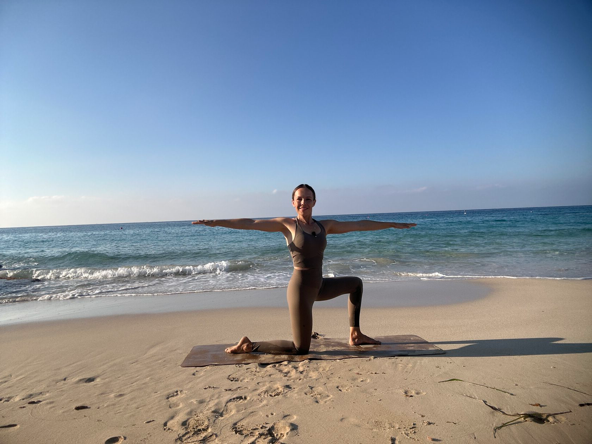

Твоё тело тебе подскажет.
Начни с вопроса.

Более 10 лет я изучаю методы снятия стресса, восстановления сил и женского здоровья.
Я сертифицированный преподаватель хатха-йоги с 400 часами подготовки в Organic People, преподаватель женской йоги и йоги для беременных. Проходила обучение пилатесу.
Преподаю йогу в Ларнаке на Кипре и организую авторские йога-ретриты на острове.
Мне важно, чтобы практика была не испытанием, а внимательным и поддерживающим диалогом с собой.
Выбрать практику ↗